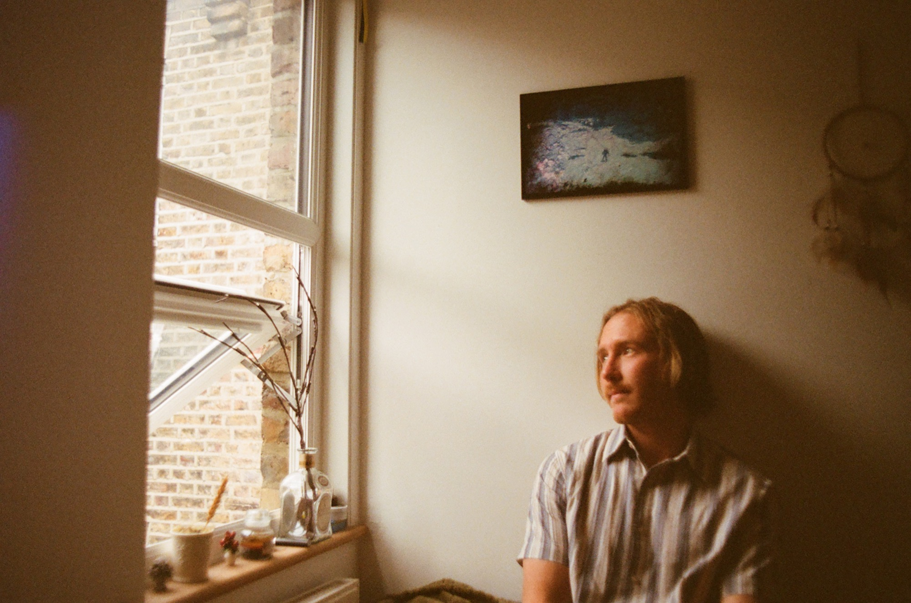

Selected films Documentary & brand
Documentary Director & Cinematographer
Films made inside the organisations that build things — told through the people who do the building.
About Michael Searle

All it took was a pinhole camera and some chemicals in a dark room and I was hooked on the magic of it all. A controlled chemical reaction that photojournalists used to change the world with one click? Sign me up.
Ultimately it’s light that matters: where it comes from, what it does to a space or a face, and what it does when it changes.
What pulled me into documentary, and still does, is the translation. Taking something that exists only as an idea, a concept, a thing somebody is trying to build, and turning it into something you can sit down and experience.
What I have now grown to love in recent years is the conversations I fly around the world to have. I get to sit across from people who have spent forty years getting very good at one thing, and they tell me all of it if I ask sincerely and then stay quiet long enough and really give them my full attention and respect. Some of it ends up in the films I make. A lot of it doesn’t.
Each project drops me into a world I knew nothing about a month earlier. A factory floor, a laboratory, a site where a city is going up. A controversial topic that changes the way I see the world. I get to ask questions until it makes sense, and then work out how (and why) to show it. For someone with my curiosity, I’m not sure there is a better way to spend my time.
This still feels like the beginning. There are bigger stories I would like to tell, and harder ones, and I’m not in a hurry to stop learning how to tell them.
Awards Five
- Telly Awards Polestar On-site Director
- Cannes Corporate Media & TV Awards Polestar On-site Director
- Telly Awards Adecco — Making the Future Work Director
- Telly Awards Xero Director
- Telly Awards Applied Materials — Girls Day Director of Photography
Contact Open for commissions
- Phone+44 (0)75 9482 2962
- BasedFulham, West London